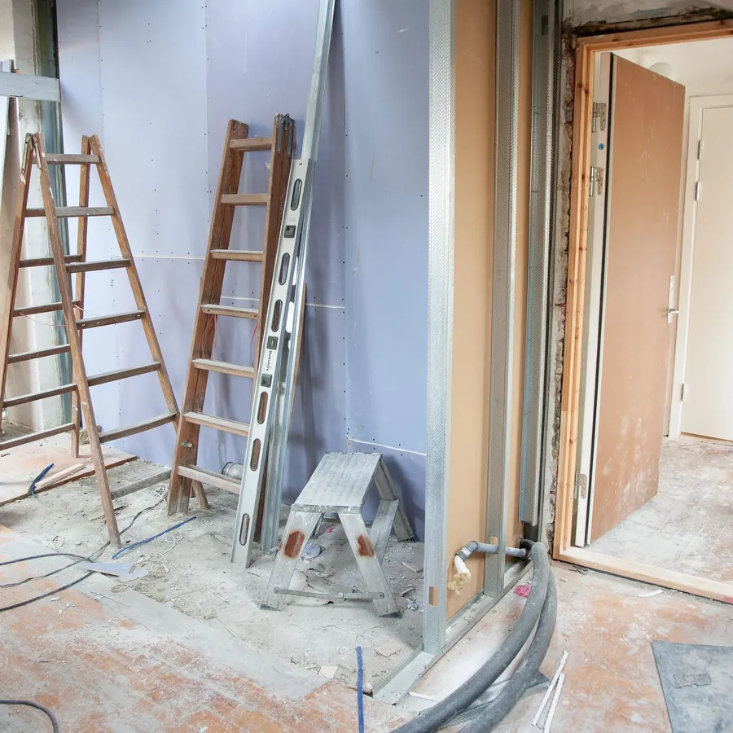

مقاول ترميم مكة | ترميم وصيانة منازل وشقق وفلل قديمة بمكه | صالح
أفضل مقاول ترميم وتجديد مباني في مكة المكرمة. نوفر حلول ترميم وصيانة شاملة للشقق والمنازل القديمة: معالجة تصدعات وهبوط الجدران، تجديد السباكة والكهرباء، عزل دورات المياه والمطابخ، تكسير وتركيب السيراميك، وتجديد كامل للدهانات والجبس بورد وتسليم الموقع على المفتاح مع الضمان الهندسي.

أعمال تجديد وترميم متكاملة لشقة سكنية في مكةأعمال الترميم والصيانة الشاملة التي ننفذها في مكة المكرمة
ترميم الشقق والفلل القديمة بالكامل
تجديد شامل من الألف إلى الياء يشمل إزالة التشطيبات القديمة، فتح الغرف، تعديل التقسيمات، وتجديد كامل للأسقف والجدران والأرضيات.
معالجة التشققات والشروخ والرطوبة
حقن الشروخ بمواد إيبوكسية ومعالجة انتفاخات اللياسة الناتجة عن رطوبة مكة مع عزل الأساسات وحماية الجدران من التمليح.
ترميم وتحديث دورات المياه والمطابخ
تكسير السيراميك التالف، تجديد شبكة أنابيب الحراري، تطبيق عزل مائي معتمد بضمان، وتركيب أحدث أطقم المغاسل والخلاطات.
تجديد شبكات الكهرباء والإنارة
سحب أسلاك معتمدة من الفنار، تعديل مواقع المفاتيح والأفياش، وتوزيع مسارات الإنارة الحديثة للسبوت لايت والليد المخفي.
تكسير وتركيب السيراميك والبورسلان
تسوية الأرضيات بالميزان الليزري وتركيب البورسلان والرخام باستخدام غراء معتمد لمنع تطبيل البلاط مع فواصل تمدد دقيقة.
الدهانات والديكورات والتشطيب النهائي
استلام المرحلة النهائية بدهانات جوتن والجزيرة، تركيب الجبس بورد وبديل الرخام لتسليم المنزل جاهزاً ونظيفاً تماماً للسكن.
صور ترميم وتجديد منازل وفلل نفذها صالح في مكة
أحياء مكة المكرمة المشمولة بأعمال الترميم والتجديد
بيتك يحتاج ترميم أو تجديد شامل بمكة؟
تواصل مع مقاول الترميم صالح مباشرة؛ أرسل صور المكان واحصل على تقييم هندسي دقيق ومعاينة مجانية للموقع.